Modifying Profile Information on the MIDM
Once an object profile has been added to the master index application, you can modify information about that object, update the object's single best record, add source records to the profile, or change the status of a source record or object profile. If you make any of these modifications, the survivor calculator determines what changes, if any, should be made to the SBR. You can only modify the SBR directly if you have overwrite permissions.
Perform any of the following tasks to update profile information:
Modifying Information in an Object Profile
If the information for an object profile changes, you can update the information in either the SBR or the affected source record. If you update the source record, then the survivor calculator determines what changes, if any, should be made to the SBR. You must have overwrite permissions to update the SBR directly. If you know the local ID and system of the source record you want to modify, you can access the source record directly, as described in Modifying Information Directly in a Source Record.
Perform any of the following tasks to modify information in an object profile:
Modifying Parent Object Information in a Profile
The Record Details page has an edit mode, where you can modify field values in the displayed object profile. The following figure shows the Record Details page in edit mode.
Figure 32 Record Detail Page - Parent Object
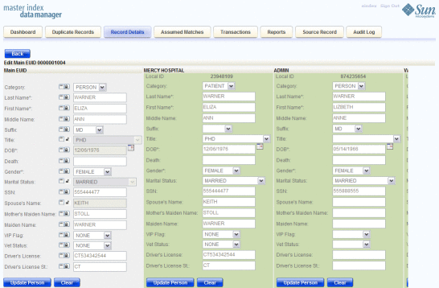To Modify a Parent Object in a Profile
- Using one of the search methods described in Searching for Object Profiles on the MIDM, display the object profile you want to modify on the Record Details page.
- At the bottom of the page, click Edit.
- To update the SBR, do the following:
- For each field in the parent object you want to modify, click the padlock icon to the left of the field to modify, and then modify the value of the field.
- Click Update parent_object under the fields you modified (where parent_object is the name of
the parent object.
Note - You can only modify SBR fields directly if you have permissions to do so.
- To update a source record, modify the parent object fields in any of the displayed system objects, and then click Update parent_object under that source record (where parent_object is the name of the parent object.
- When you are done modifying information, click Update parent_object, and then click
Save at the bottom of the page.
The page refreshes, and, if you modified a source record, the SBR is recalculated based on the new information.
Adding a Child Object to an Object Profile
If additional information becomes available about an object, you might need to add a new child object to the object profile. For example, if additional address information becomes available, you might need to add a new address record to the affected source record. You cannot add a child object to the SBR.
Figure 33 Record Details Page - Child Objects
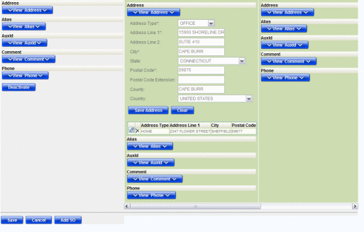To Add a Child Object to an Object Profile
- Using one of the search methods described in Searching for Object Profiles on the MIDM, display the object profile you want to modify on the Record Details page.
- At the bottom of the page, click Edit.
- Click View child_type in the column containing the source record you want to
modify.
For example, to add an address record, select View Addresses.
- Enter the new information for the child object.
- Beneath the record you updated, click Save child_type.
- Scroll to the bottom of the page and click Save.
The page refreshes and the SBR is recalculated based on the new information.
Modifying a Child Object in a Profile
If information about a child object changes, you might need to modify information for an existing child object. You cannot modify information in child object in the SBR. The following figure shows a child object on the Record Details page in edit mode.
Figure 34 Record Details Page – Edit Child Object
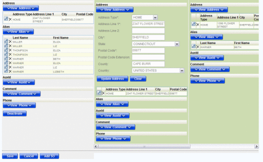To Modify a Child Object in a Profile
- Using one of the search methods described in Searching for Object Profiles on the MIDM, display the object profile you want to modify on the Record Details page.
- At the bottom of the page, click Edit.
- In the source record you want to modify, click View child_type, where
child_type is the name of the child object type you want to add.
For example, to modify an address record, select View Addresses.
Empty child object fields appear along with a list of existing child objects of the selected type.
- In the child object list, click the pencil icon next to the
child object you want to modify.
The field values for the selected child object are populated into the child object fields.
- Modify any open fields for the child object.
- Beneath the record you updated, click Save child_type.
- Scroll to the bottom of the page and click Save.
The page refreshes, and, if you modified a source record, the SBR is recalculated based on the new information.
Deleting a Child Object From a Profile
If a child object is entered incorrectly or becomes obsolete, you can delete the object from the affected object profile. Child objects cannot be deleted from the SBR. Deleting a child object cannot be undone.
Figure 35 Record Details Page – Delete Child Object
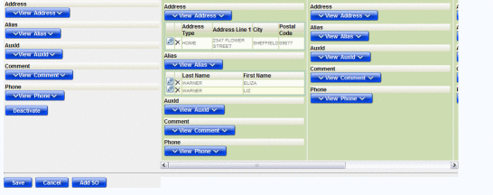To Delete a Child Object
- Using one of the search methods described in Searching for Object Profiles on the MIDM, display the object profile you want to modify on the Record Details page.
- At the bottom of the page, click Edit.
- Click View child_type in the source record you want to modify, where child_type
is the name of the child object type you want to add. For
example, to delete an address record, select View Addresses.
Empty child object fields appear along with a list of existing child objects of the selected type.
- In the child object list, click the delete icon next to the
child object you want to modify.
The delete icon is shaped like an “X”.
- Scroll to the bottom of the page and click Save.
The page refreshes, and, if you modified a source record, the SBR is recalculated based on the new information.
Modifying Information Directly in a Source Record
If the object information for a specific source record changes, you can update the information in by accessing either the object profile or the affected source record. If you update the source record, then the survivor calculator determines what changes, if any, should be made to the SBR. This section describes how to modify information by accessing the source record directly. For information about modifying an object profile, see Modifying Information in an Object Profile.
Perform any of the following tasks to modify information in a source record directly:
Modifying the Parent Object in a Source Record
If parent object for a particular source record changes, you can update the source record directly on the Source Record page. The following figure shows the Source Record page in edit mode.
Figure 36 Source Record Page – Edit Parent Object
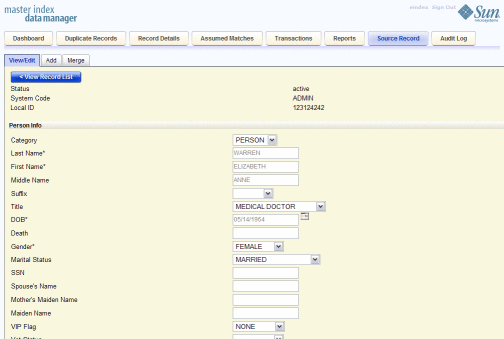To Modify the Parent Object in a Source Record
- In the MIDM tabbed headings, click Source Record.
- If necessary, click the View/Edit sub-tab.
- In the System field, select the name of the system for the source record you want to modify.
- In the Local ID field, enter the local ID for the record you want to modify.
- Click Validate.
If a matching source record is found, it appears on the Source Record page in view mode.
- At the bottom of the page, click Edit.
- Modify the parent object fields in the upper portion of the page.
- When you are done modifying information, click Save at the bottom of the
page.
The page refreshes, and the SBR is recalculated based on the new information.
Adding a Child Object to a Source Record
If additional information becomes available about an object, you might need to add a new child object to a source record. For example, if additional address information becomes available, you might need to add a new address record to the affected source record.
Figure 37 Source Record Page - Add Child Object
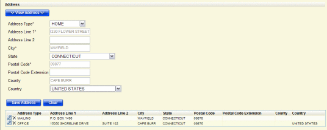To Add a Child Object to a Source Record
- In the MIDM tabbed headings, click Source Record.
- If necessary, click the View/Edit sub-tab.
- In the System field, select the name of the system for the source record you want to modify.
- In the Local ID field, enter the local ID for the record you want to modify.
- Click Validate.
If a matching source record is found, it appears on the Source Record page in view mode.
- At the bottom of the page, click Edit.
- Click View child_type, where child_type is the name of the type of
child you want to add.
The child object section expands to display empty fields for the object.
- Enter information into the empty child object fields.
- Click Save child_type.
- When you are done adding information, click Save at the bottom of the
page.
The page refreshes, and the SBR is recalculated based on the new information.
Modifying a Child Object in a Source Record
If information about an object changes, you might need to modify information for an existing child object. You can make those changes on the Source Record page.
Figure 38 Source Record Page – Edit Child Object
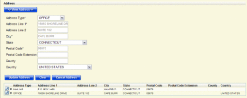To Modify a Child Object in a Source Record
- In the MIDM tabbed headings, click Source Record.
- If necessary, click the View/Edit sub-tab.
- In the System field, select the name of the system for the source record you want to modify.
- In the Local ID field, enter the local ID for the record you want to modify.
- Click Validate.
If a matching record is found, it appears on the Source Record page in view mode.
- At the bottom of the page, click Edit.
- Click View child_type, where child_type is the name of the type of
child you want to add.
The child object section expands to display empty fields for the object along with a list of existing child objects.
- Click the pencil icon next to the child object you want to
modify.
The child object fields are populated with the values from the child object you selected.
- Modify any of the child object fields.
- Click Save child_type.
- When you are done modifying information, click Submit.
The page refreshes, and the SBR is recalculated based on the new information.
Deleting a Child Object From a Source Record
If a child object is entered incorrectly or becomes obsolete, you can delete the object from the affected source record. Deleting a child object cannot be undone.
Figure 39 Source Record Page – Delete Child Object
To Delete a Child Object From a Source Record
- In the MIDM tabbed headings, click Source Record.
- If necessary, click the View/Edit sub-tab.
- In the System field, select the name of the system for the source record you want to modify.
- In the Local ID field, enter the local ID for the record you want to modify.
- Click Validate.
If a matching record is found, it appears on the Source Record page in view mode.
- At the bottom of the page, click Edit.
- Click View child_type, where child_type is the name of the type of
child you want to add.
The child object section expands to display a list of existing child objects.
- Click the delete icon next to the child object you want to
modify.
The delete icon look like an “X”.
- Click Save child_type.
- When you are done modifying information, click Submit.
The page refreshes, and the SBR is recalculated based on the new information.
Overwriting SBR Field Values
Locking an SBR field for overwrite is one way to ensure that the value for that field is not recalculated by the survivor calculator each time the object profile is updated. If you determine that a value in the SBR is the most accurate data and should not be updated, you can lock the field and no updates can be made to that SBR field by the survivor calculator until it is unlocked. If you unlock a locked field, the value of that field is automatically recalculated by the survivor calculator as soon as the unlock action is committed. Only parent object fields can be locked.
Locking an SBR Field
When you lock a field in an SBR, that field can only be updated through the MIDM by a user who has overwrite permissions. Locking a field in the SBR removes the survivor calculator from the update process for that field and any updates made to or by source records will not update the locked fields in the SBR. You can only lock fields in the parent object.
The following figure shows an object profile with three locked fields in the SBR (as indicated by the open padlock icons in the column beneath the red arrow).
Figure 40 Locked Fields in an SBR
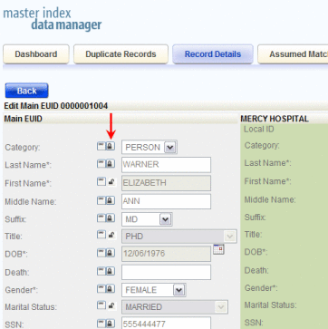To Lock a Field in the SBR
- Using one of the search methods described in Searching for Object Profiles on the MIDM, display the object profile containing the field you want to lock on the Record Details page.
- At the bottom of the page, click Edit.
- Scroll to the SBR field you want to lock. Only parent object fields can be locked.
- If necessary, change the value of the field to be locked.
Tip - In order for the lock to be accepted, you need to make some modification to the field. If the field already contains the value you want to lock, reenter that value into the field.
- Click the padlock icon to the left of the field.
Note - A closed padlock indicates an unlocked field that can be locked. An open padlock indicates a locked field that can be unlocked.
- Click Save.
The field is now locked and cannot be edited by updates to source records until the lock is removed.
Unlocking an SBR Field
Once you unlock a field for overwrite in an SBR, the SBR is recalculated by the survivor calculator and the field can be updated by changes made to source records. The following figure shows an object profile in edit mode with all fields unlocked (as indicated by the column of icons below the red arrow).
Figure 41 Unlocked Fields in an SBR
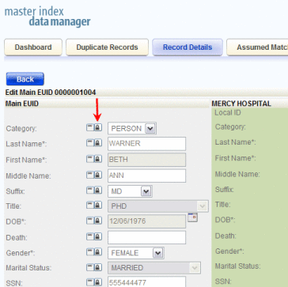To Unlock an SBR Field
- Using one of the search methods described in Searching for Object Profiles on the MIDM, display the object profile containing the field you want to unlock on the Record Details page.
- At the bottom of the page, click Edit.
- Scroll to the SBR field you want to unlock.
- Click the padlock icon to the left of the field.
Note - A closed padlock indicates an unlocked field that can be locked. An open padlock indicates a locked field that can be unlocked.
- Click Save.
The field is now locked and cannot be edited by updates to source records until the lock is removed.
Overriding the Survivor Calculator's SBR
Linking an SBR field to a field in a source record is one way to ensure that the value for that field is not recalculated by the survivor calculator each time the object profile is updated. If you determine that a value in a specific source system is the most accurate data and should always be used in the SBR, you can link the field values and override the survivor calculator's version of the SBR. If you unlink a linked field, the value of that field is automatically recalculated by the survivor calculator as soon as the unlink action is performed. You can only link field values from the parent object.
Linking an SBR Field to a Specific Source Record
When you link a field in an SBR to a field in one of the profile's source records, the value of the field will always equal the value of the field in the source record, even when the source record field is updated. Linking a field in the SBR to a source record removes the survivor calculator from the update process for that field. Any updates made to or by other source records in the profile will not update the linked field in the SBR. Use linking when you have very high confidence that the field value from a specific source record is likely to be the most accurate and current value.
The following figure shows two linked fields in an object profile, as indicated by the link icons to the left of the fields in the source record. All other fields have the link icon in the SBR.
Figure 42 Linked Fields in an SBR
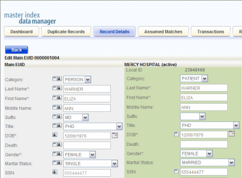To Link an SBR Field to a Source Record Field
- Using one of the search methods described in Searching for Object Profiles on the MIDM, display the object profile containing the field you want to link on the Record Details page.
- At the bottom of the page, click Edit.
- Scroll to the SBR field you want to link.
- Click the chain–link icon to the far left of the field.
A popup window appears where you can specify the source record to link.
- On the popup window, select the source system code and the local ID of the source record to which you want to link the selected field.
- Click OK.
The link icon moves from the SBR field to the source record field. The SBR field is now linked and can only be edited by updates to the source record to which it is linked.
Unlinking an SBR Field From a Source Record
Once you unlink a field a field in the SBR from the corresponding field in the source record, the SBR is recalculated by the survivor calculator and the field can be updated by changes made to other source records. The following figure shows an SBR with no fields linked, as indicated by all of the link icons next to the SBR fields (in the column beneath the red arrow).
Figure 43 Unlinked Fields in an SBR
To Unlink an SBR Field From a Source Record
- Using one of the search methods described in Searching for Object Profiles on the MIDM, display the object profile containing the field you want to link on the Record Details page.
- At the bottom of the page, click Edit.
- Scroll to the field you want to unlink.
- Click the chain–link icon to the left of the field in the child
object.
The icon is moved from the source record field to the SBR field that is no longer linked. The SBR is recalculated by the survivor calculator.
Adding a Source Record to an Object Profile
If an object has local IDs in addition to those already recorded in the master index application, you can add the local IDs to the object’s profile by adding a source record to the profile. To add a local ID to an object profile, you need to specify information such as the system that assigned the local ID, certain parent object information, and the local ID itself. When you add a source record to an object profile, the survivor calculator determines what changes, if any, should be made to the SBR.
You cannot add a new local ID and system pair to an object profile if that same local ID and system pair already exists in another object profile.
Figure 44 Record Details Page – Add Parent Information
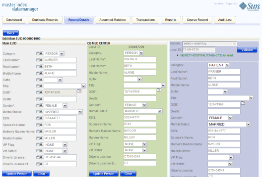To Add a Source Record to an Object Profile
- Using one of the search methods described in Searching for Object Profiles on the MIDM, display the object profile you want to modify on the Record Details page.
- At the bottom of the page, click Edit EUID.
- At the bottom of the page, click Add SO.
A new column appears to the left of the existing records for you to add the new source record.
- Enter the system and local ID for the new source record, and
then click Validate.
If no existing record match the system and local ID you entered and the local ID is of a valid format, a message appears letting you know validation succeeded.
- Enter information in the parent object fields.
- For each child object to add, do the following:
- Click View child_type in the column containing the new source record.
For example, to add an address record, select View Addresses.
- Enter the new information for the child object.
- Beneath the record you updated, click Save child_type.
- Click View child_type in the column containing the new source record.
- Scroll to the bottom of the page and click Save.
The page refreshes and the SBR is recalculated based on the new information.
Note - You only need to enter required fields in order to save the new source record. Required fields are indicated by an asterisk (*).
Deactivating a Profile or Source Record
If an object profile or source record is no longer active, you cannot delete the profile or record, but you can deactivate it. Once you deactivate a record, you can reactivate it if needed. Deactivating an object profile deactivates all source records associated with that profile and removes the potential duplicate listings for that profile. If you deactivate a source record, the survivor calculator determines what changes, if any, should be made to the SBR.
Deactivating an Object Profile
Deactivated profiles cannot be modified, and in some cases, cannot be viewed. If you deactivate a profile in error, you can reactivate it if needed.
Figure 45 Record Details Page - Deactivate
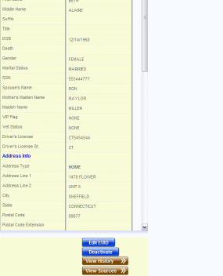To Deactivate an Object Profile
- Using one of the search methods described in Searching for Object Profiles on the MIDM, display the object profile you want to deactivate on the Record Details page.
- At the bottom of the page, click Deactivate.
The profile is deactivated in the database and the EUID appears in beige on the MIDM.
Deactivating a Source Record
If an existing local ID for an object becomes obsolete, you can deactivate the source record with that local ID for the object profile. An object profile must have at least one active local ID; if you deactivate an object’s last active source record, the entire profile is deactivated. When you deactivate a source record from an object profile, the survivor calculator determines what changes, if any, should be made to the SBR.
You can deactivate a source record from either the Record Details page, where you can view the source record within the context of its profile, or from the Source Record page, where you can access the
Figure 46 Deactivate Function on the Source Record Page
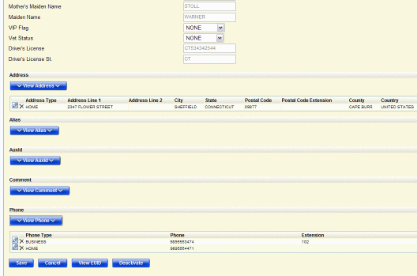To Deactivate a Source Record (by Local ID)
- In the tabbed headings, click the Source Record tab.
- If necessary, click the View/Edit sub-tab.
- Select the system and enter the local ID of the source record to deactivate.
- Click Search.
If a matching record is found, the Source Record page appears in view mode.
- At the bottom of the page, click Edit.
- At the bottom of the page, click Deactivate.
The page refreshes and the SBR for the object profile containing the source record is recalculated based on the new information.
To Deactivate a Source Record (by EUID)
- Using one of the search methods described in Searching for Object Profiles on the MIDM, display the object profile containing the source record you want to deactivate on the Record Details page.
- At the bottom of the page, click Edit.
- Below the source record you want to deactivate, click Deactivate.
The page refreshes and the SBR for the object profile containing the source record is recalculated based on the new information.
Reactivating a Profile or Source Record
Once an object profile or source record is deactivated, you can reactivate it if needed. Reactivating a profile causes the potential duplicates for the profile to be recalculated. Reactivating a source record causes the SBR to be recalculated.
Reactivating an Object Profile
If an object profile is deactivated in error or becomes active again, you can reactivate that profile. Reactivating a profile returns the profile to its status just prior to when it was deactivated.
Note - When you reactivate an object profile, all source records associated with that profile are changed to active status, regardless of their prior status. Review each source record to verify that its status is correct after the reactivation.
Figure 47 Record Details Page - Reactivate
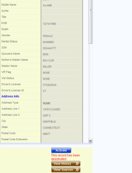To Reactivate an Object Profile
- Using one of the search methods described in Searching for Object Profiles on the MIDM, display the object profile you want to update on the Record Details page.
- At the bottom of the page, click Activate.
The profile is reactivated in the database.
Reactivating a Source Record
If a source record was deactivated in error or is no longer inactive, you can easily reactivate the source record. You can activate the source record from the Record Details page, where you can view the source record within the context of its profile, or from the Source Record page, where you can access the source record directly.
Figure 48 Activate Source Record on the Source Record Page
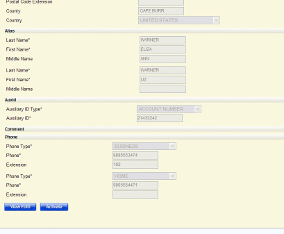To Reactivate a Source Record (by Local ID)
- In the tabbed headings, click the Source Record tab.
- If necessary, click the View/Edit sub-tab.
- Select the system and enter the local ID of the source record to reactivate.
- Click Search.
If a matching record is found, the Source Record page appears in view mode.
- At the bottom of the page, click Edit.
- At the bottom of the page, click Activate.
The page refreshes and the SBR for the object profile containing the source record is recalculated based on the new information.
To Reactivate a Source Record (by EUID)
- Using one of the search methods described in Searching for Object Profiles on the MIDM, display the object profile containing the source record you want to deactivate on the Record Details page.
- At the bottom of the page, click Edit.
- Below the source record you want to deactivate, click Activate.
The page refreshes and the SBR for the object profile containing the source record is recalculated based on the new information.